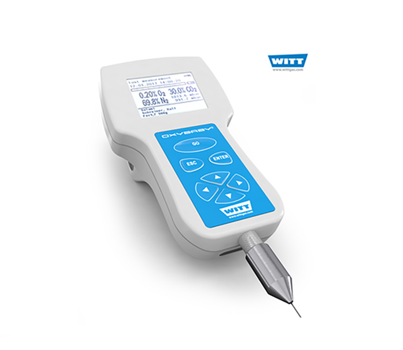
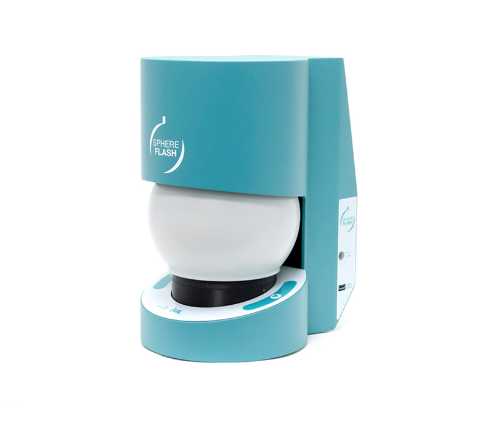
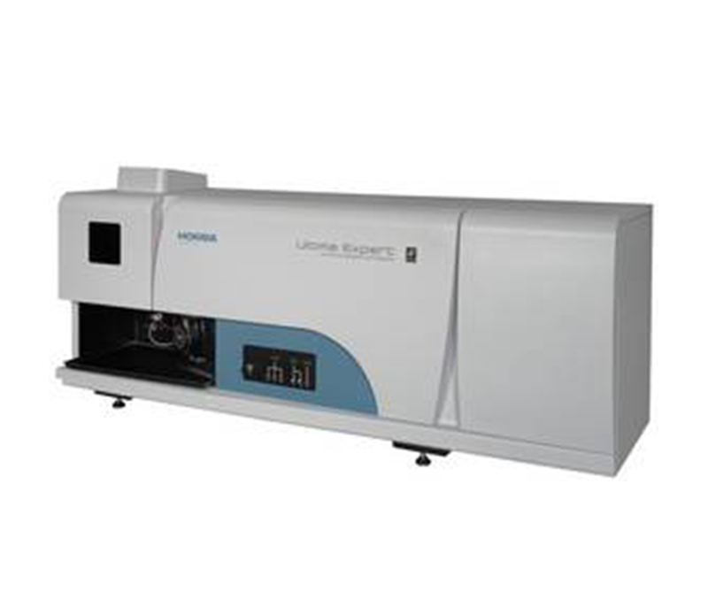
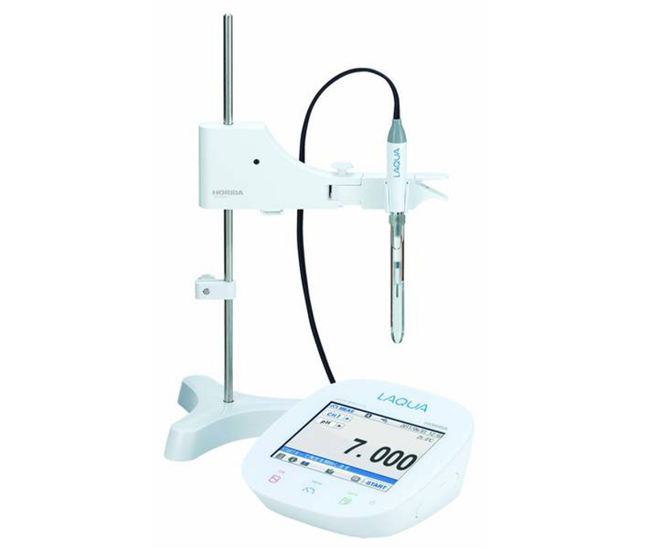
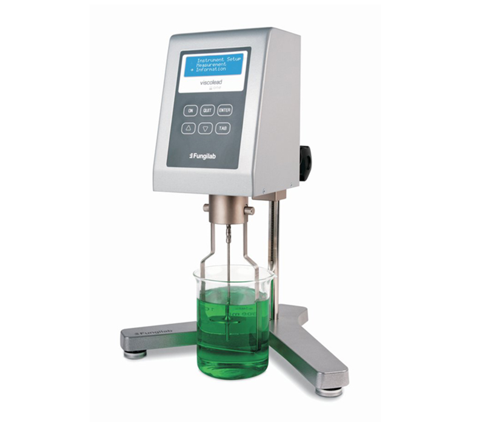
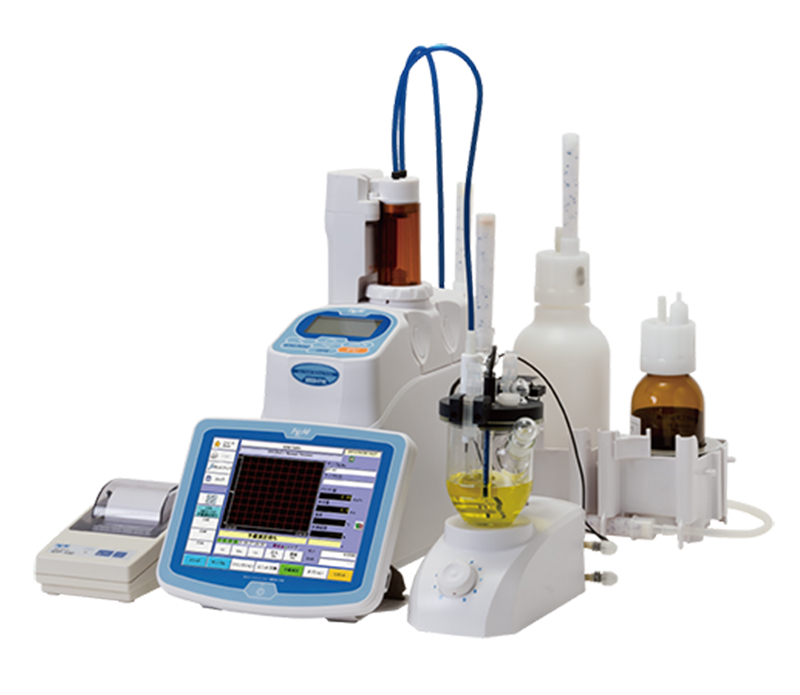
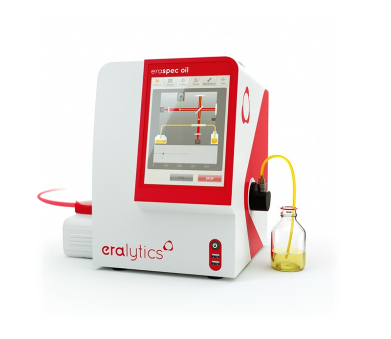
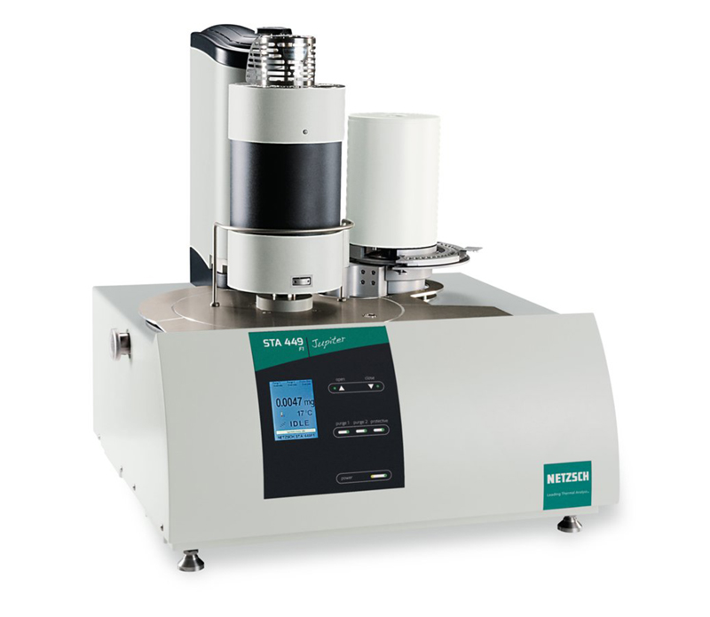

Laboratorio fisicoquímico
- Medidores y mezcladores de gases
- pH, Conductividad, ORT, ISE, OD
- Tituladores automáticos y Karl Fisher
- Densímetros, refractómetros y viscosímetros
- Estufas y muflas
- Analizadores de flujo segmentado y discretos
- Concentradores de muestras
- Molinos y tamices
- Análisis térmico: DSC/DTA, TGA, STA, DIL, TMA, DEA, DMA.Tamaño de partícula
- Planchas, agitadores magnéticos y orbitales
- Baños termostatizados y baños María
- Espectrofluorómetros
- Espectrofotómetros UV/Vis, IR, Raman, ICP
- HPLC y GC
- Balanzas analíticas, de precisión y humedad
- Actividad de agua, humedad y temperatura
- TOC de mesa y en línea
- Reómetros

Laboratorio microbiológico
- Sembradores automáticos
- Contadores automáticos y manuales
- Incubadoras, estufas y autoclaves
- Freezers
- Bioreactores y biofábricas
- Baños termostatizados
- Muestreadores de aire
- Masticadores y dilutores
- Espectrofluorómetros
- Cabinas de flujo laminar
- Medidores de pH, OD, cond., ISE, turbidez, cloro
- Sondas multiparámetro
- Nitrógeno, fosfato, sílice, aluminio, SS, grasa y más
- Flujo segmentado
- Espectrofotómetros UV/Vis, ICP
- Espectrofluorómetros
- HPLC y GC

Preparación de muestras
- Molinos para granos, alimentos, suelos, hojas
- Digestores convencionales y de microondas
- Tamizadores
- Estufas
- Baños de ultrasonido
- Baños María

Aguas y efluentes
- Medidores de pH, OD, cond., ISE, turbidez, cloro
- Sondas multiparámetro
- Nitrógeno, fosfato, sílice, aluminio, SS, grasa y más
- Flujo segmentado
- Espectrofotómetros UV/Vis, ICP
- Espectrofluorómetros
- HPLC y GC

Industria farmacéutica
- Termohigrómetros y dataloggers
- Espectrofotómetros UV/Vis, IR, Raman, ICP
- Tituladores automáticos y Karl Fisher
- Baños de ultrasonido
- Test de disolución, desintegración y frabilidad
- Durómetros
- Tamaño de partícula
- TOC de mesa y en línea
- Baños termostatizados
- HPLC y GC
- Balanzas analíticas, de precisión y humedad
- Incubadoras, estufas, muflas y autoclaves
- Cámaras de estabilidad
- Densímetros, refractómetros y viscosímetros

Bebidas y alimentos
- Densímetros, refractómetros y viscosímetros
- Medidores y mezcladores de gases
- Lenguas, narices y ojos electrónicos
- Destiladores de alcohol y nitrógeno
- Tituladores automáticos y Karl Fisher
- Actividad de agua
- Determinadores de azúcares y fibra
- Analizadores de leche
- pH, OD, cond., ISE, turbidez, cloruro
- Incubadoras, estufas, muflas, autoclaves
- Balanzas y termobalanzas
- Analizadores de flujo segmentado
- Reómetros y texturómetros
- Farinógrafos, amilógrafos, extensógrafos
- Determinación de gluten y falling number

Industria petoquímica
- Flash point, FTIR, OSI
- Densímetros, refractómetros y viscosímetros
- Aceite en agua y tamaño de partícula
- Espectrofotómetros ICP
- Tituladores automáticos y Karl Fisher
- Destiladores
- Sulfuro, carbón, nitrógeno, cloro

Agroindustrias y suelos
- Molinos y granulómetros
- pH, Conductividad, ORT, ISE, OD
- Espectrofotómetros UV/vis e ICP (metales)
- Determinación de nitrógeno
- HPLC y GC
- Agitadores